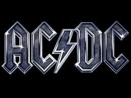

A Revolução do Rock
Os anos 80 foram uma era dourada para o rock. Bandas como Queen, Guns N' Roses, U2, Bon Jovi e AC/DC dominaram as paradas e definiram o som de uma geração. Com solos de guitarra marcantes, vocais poderosos e shows memoráveis, o rock internacional viveu seu auge e moldou o cenário musical mundial.

Bandas Icônicas
Queen
Freddie Mercury e companhia encantaram o mundo com hinos como “We Will Rock You” e “Bohemian Rhapsody”.

AC/DC
Com riffs eletrizantes e muita atitude, AC/DC definiu o hard rock dos anos 80.

Guns N' Roses
“Sweet Child O’ Mine” e “Paradise City” tornaram o grupo um símbolo do rock rebelde.
Curiosidades
- O Live Aid de 1985 reuniu artistas lendários para uma das maiores causas beneficentes da história.
- Os videoclipes ganharam destaque com o surgimento da MTV em 1981.
- A estética oitentista trouxe cabelos armados, roupas de couro e muita energia nos palcos.